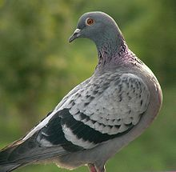

Содержание [скрыть]
IP посредством почтовых голубей
Материал из Википедии — свободной энциклопедии
IP посредством почтовых голубей (англ. IP over Avian Carriers; RFC 1149) — шуточный RFC, описывающий способ передачи IP-пакетов с помощью голубей. Опубликован 1 апреля 1990 организацией Internet Engineering Task Force. Написан Д. Вейтцманом (Waitzman), как один из первоапрельских RFC. Вейтцман расширил протокол 1 апреля 1999 в RFC 2549 «IP посредством почтовых голубей с QoS». В 2011 вышел RFC 6214, содержащий адаптацию RFC 1149 для IPv6.

Практическая реализация
28 апреля 2001 на практике реализован[2] членами Бергенской группы пользователей Linux (Норвегия). Они переслали 9 пакетов данных, содержащих по одному ICMP эхо-запросу, на 9 голубях в удалённый пункт, который находился на расстоянии 5 км. В пункт отправки успешно вернулись только 4 эхо-ответа. При потерях 55,6 % пакетов и времени задержки от 53 минут до 1 часа 40 минут, метод всё же доказал свою практическую работоспособность.
Script started on Sat Apr 28 11:24:09 2001 vegard@gyversalen:~$ /sbin/ifconfig tun0 tun0 Link encap:Point-to-Point Protocol inet addr:10.0.3.2 P-t-P:10.0.3.1 Mask:255.255.255.255 UP POINTOPOINT RUNNING NOARP MULTICAST MTU:150 Metric:1 RX packets:1 errors:0 dropped:0 overruns:0 frame:0 TX packets:2 errors:0 dropped:0 overruns:0 carrier:0 collisions:0 RX bytes:88 (88.0 b) TX bytes:168 (168.0 b) vegard@gyversalen:~$ ping -c 9 -i 900 10.0.3.1 PING 10.0.3.1 (10.0.3.1): 56 data bytes 64 bytes from 10.0.3.1: icmp_seq=0 ttl=255 time=6165731.1 ms 64 bytes from 10.0.3.1: icmp_seq=4 ttl=255 time=3211900.8 ms 64 bytes from 10.0.3.1: icmp_seq=2 ttl=255 time=5124922.8 ms 64 bytes from 10.0.3.1: icmp_seq=1 ttl=255 time=6388671.9 ms --- 10.0.3.1 ping statistics --- 9 packets transmitted, 4 packets received, 55% packet loss round-trip min/avg/max = 3211900.8/5222806.6/6388671.9 ms vegard@gyversalen:~$ exit Script done on Sat Apr 28 14:14:28 2001
См. также
- Первоапрельские RFC
- HTCPCP — гипертекстовый протокол управления кофеваркой
- Голубиная связь
Ссылки
- RFC 1149
- Практическая реализация протокола
- RFC 2549 (англ.) «IP посредством почтовых голубей с QoS»